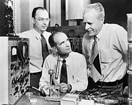

Early transistors
Detector and power rectifiers could not amplify a signal. Many efforts were made to develop a solid-state amplifier and were successful in developing a device called the point contact transistor which could amplify 20dB or more.[34] In 1922, Oleg Losev developed two-terminal, negative resistance amplifiers for radio, but he perished in the Siege of Leningrad after successful completion. In 1926, Julius Edgar Lilienfeld patented a device resembling a field-effect transistor, but it was not practical. R. Hilsch and R. W. Pohl in 1938 demonstrated a solid-state amplifier using a structure resembling the control grid of a vacuum tube; although the device displayed power gain, it had a cut-off frequency of one cycle per second, too low for any practical applications, but an effective application of the available theory.[28] At Bell Labs, William Shockley and A. Holden started investigating solid-state amplifiers in 1938. The first p–n junction in silicon was observed by Russell Ohl about 1941 when a specimen was found to be light-sensitive, with a sharp boundary between p-type impurity at one end and n-type at the other. A slice cut from the specimen at the p–n boundary developed a voltage when exposed to light. The first working transistor was a point-contact transistor invented by John Bardeen, Walter Houser Brattain, and William Shockley at Bell Labs in 1947. Shockley had earlier theorized a field-effect amplifier made from germanium and silicon, but he failed to build such a working device, before eventually using germanium to invent the point-contact transistor.[35] In France, during the war, Herbert Mataré had observed amplification between adjacent point contacts on a germanium base. After the war, Mataré's group announced their "Transistron" amplifier only shortly after Bell Labs announced the "transistor". In 1954, physical chemist Morris Tanenbaum fabricated the first silicon junction transistor at Bell Labs.[36] However, early junction transistors were relatively bulky devices that were difficult to manufacture on a mass-production basis, which limited them to a number of specialised applications.[37]